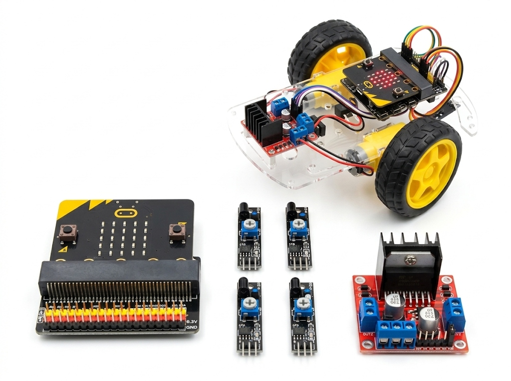

Concepto del Robot Seguidor de Línea
Definición técnica de autonomía en robótica móvil, principios físicos de la transducción óptica y análisis comparativo entre control analógico discreto y microcontroladores programables.
Definición y Propósito del Robot
Un robot seguidor de línea es un sistema mecatrónico móvil terrestre clasificado como un vehículo de guiado autónomo básico. Su propósito primordial es rastrear una trayectoria física continua delimitada sobre una superficie mediante un contraste óptico marcado (generalmente una franja de color negro sobre fondo blanco mate o viceversa).
¿Qué significa exactamente que sea "Autónomo"?
En teoría de control, la autonomía implica que el dispositivo opera bajo una estructura de lazo cerrado (closed-loop) sin requerir intervención ni comandos de un operador humano en tiempo real. El robot adquiere información del estado del entorno mediante sus sensores, la procesa a través de su circuitería interna y acciona sus motores para corregir su trayectoria instantáneamente.
Reconocimiento de la Línea: Física de Reflectancia Óptica
La discriminación de la trayectoria no requiere cámaras ni visión computacional compleja. Se fundamenta en el coeficiente de reflexión de la radiación electromagnética infrarroja (\(\lambda \approx 950\text{ nm}\)):
- Superficie Blanca (Fondo): Presenta alta reflectancia espectral. La radiación emitida por el LED IR rebota e incide directamente sobre la base fotosensible del fototransistor, provocando su conducción eléctrica (estado de baja impedancia).
- Franja Negra (Línea): Presenta un coeficiente de absorción muy elevado (el pigmento negro absorbe casi la totalidad de fotones infrarrojos). La radiación dispersada es mínima, manteniendo al fototransistor en estado de corte (alta impedancia).
Geometría de Trayectorias y Limitaciones Físicas
El robot puede navegar por circuitos abiertos o cerrados que presenten rectas y curvas. El radio de curvatura mínimo admisible (\(R_{\min}\)) está determinado por tres factores físicos: la distancia entre los dos sensores frontales, la inercia rotacional del chasis y la rapidez con la que los transistores conmutan la corriente de los motores. Si la curva es demasiado cerrada o la velocidad muy alta, la inercia puede expulsar los sensores fuera de la pista antes de que el circuito alcance a frenar la rueda interna.
Geometría Óptica de Pista

📖 Comprensión Intuitiva (Sin Prerrequisitos Técnicos)
Imagina un vagón de tren con dos motores independientes en sus ruedas. En vez de rieles metálicos, utiliza "rieles de luz": dos pequeñas linternas infrarrojas apuntan al suelo. Cuando una rueda se desvía y pisa la cinta negra, el sensor correspondiente detecta que la luz "se apagó" (porque el negro se la tragó). Al faltarle luz, el circuito corta la electricidad de ese motor de inmediato. Como el otro motor sigue empujando, el vagón se dobla automáticamente hacia adentro y regresa a la línea.
Control Digital con BBC Micro:bit vs. Control Analógico Discreto
Fundamentación técnico-pedagógica de por qué la arquitectura híbrida Micro:bit + Puente H L298N es el estándar formativo óptimo en grado 11 para desarrollar pensamiento computacional y robótica aplicada.
Arquitectura Digital BBC Micro:bit + L298N
Nuestra ElecciónEl lazo de control combina procesamiento digital en tiempo real con una etapa de potencia industrial L298N capaz de modular velocidad por PWM y dirección diferencial.
-
Pensamiento Computacional Real: El estudiante programa algoritmos condicionales, modulación PWM para curvas suaves y calibración dinámica de umbrales digitales en MakeCode o Python.
-
Control de Velocidad Analógico (PWM): Permite ajustar la velocidad de los motores (Pines 0 y 1) sin recalentar transistores lineales, evitando que la inercia saque al robot en curvas cerradas.
-
Aislamiento de Potencia y Señal: El Puente H L298N aísla eléctricamente los 9V inductivos de los motores de la lógica de 3.3V del microcontrolador y los 5V de los sensores HW-511.
-
Escalabilidad y Telemetría: Posibilidad de incorporar matriz LED de estado, botones de arranque, radio inalámbrica y sensores adicionales sin rediseñar el hardware físico.
Circuito Puramente Analógico (LM393 + Transistores)
Enfoque Discreto RígidoConexión directa de foto-sensores a amplificadores operacionales/comparadores y transistores bipolares de conmutación sin procesador intermedio.
-
Rigidez Algorítmica: Cualquier cambio en la estrategia de viraje o corrección exige soldar o modificar componentes físicos en protoboard, sin memoria de estados.
-
Control Todo/Nada (Bang-Bang): Los motores operan exclusivamente al 100% o 0%, generando tirones mecánicos y oscilaciones bruscas (hunting) a lo largo de la trayectoria.
-
Sin Pensamiento Computacional: No aborda variables, estructuras de decisión complejas, ciclos de polling ni las competencias de software exigidas por el Ministerio y el British Council.
-
Alta Sensibilidad a Batería Descargada: Al caer el voltaje, el umbral de los divisores resistivos se desfasa y requiere calibración manual continua con destornillador.